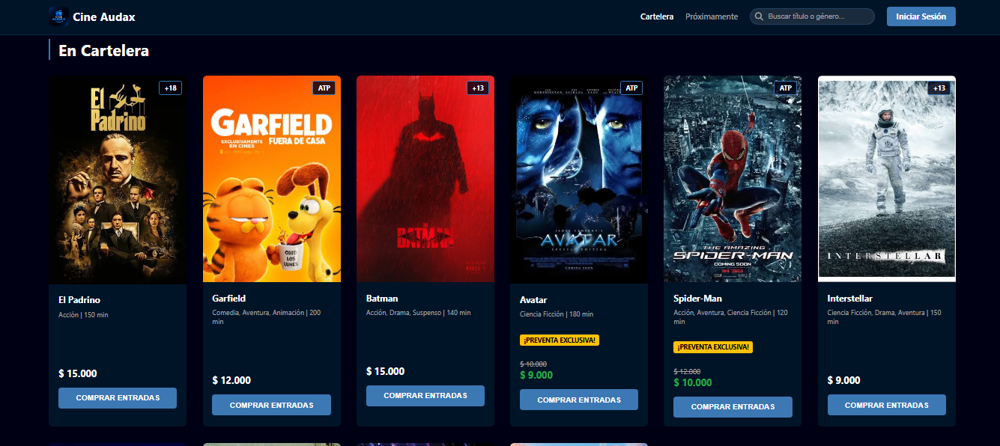

Cepa
App móvil Elaborada en Equipo para la gestión de un restaurante gastronómico: ingreso de clientes, mesas, pedidos y atención en tiempo real.
Desarrollador Full Stack | Estudiante en la UTN. Buenos Aires, Argentina.
Especializado en construir soluciones a medida, sistemas de gestión y APIs.
Angular, Node.js y SQL.
Desarrollo de una landing page responsive para la empresa de transporte FECOOTRAUN, construida con HTML5, CSS3, Bootstrap y PHP para la gestión dinámica de datos.
API RESTful escalable desarrollada en equipo para gestionar productos, usuarios y recursos de un comercio de electrónica. Incluye panel de administración con vistas dinámicas, autenticación segura y control de accesos por roles.
App móvil Elaborada en Equipo para la gestión de un restaurante gastronómico: ingreso de clientes, mesas, pedidos y atención en tiempo real.

Plataforma integral para la gestión de ventas de entradas, Candy Bar y administración de un establecimiento de cine.
API REST construida con Node.js y Express que genera contraseñas seguras de forma automática y las almacena de manera encriptada en una base de datos SQLite. Incluye una interfaz web con efecto visual estilo Matrix.
 Angular
Angular
 TypeScript
TypeScript
 JavaScript
JavaScript
 HTML5
HTML5
 Bootstrap
Bootstrap
 Ionic
Ionic
 Node.js
Express.js
Node.js
Express.js
 NestJS
NestJS
 Supabase
SQL
Supabase
SQL
 MongoDB
MongoDB
 Git
GitHub
Git
GitHub
 Docker
Metodologías Ágiles
Prompt Engineering
Desarrollo Asistido por IA
Docker
Metodologías Ágiles
Prompt Engineering
Desarrollo Asistido por IA
Comencé mi camino en la tecnología impulsado por la curiosidad de entender cómo funcionan las cosas por detrás. Actualmente, me encuentro cursando la Tecnicatura Universitaria en Programación en la Universidad Tecnológica Nacional (UTN).
Me enfoco en construir software que resuelva problemas reales, abarcando desde la concepción de la base de datos hasta la interfaz del usuario. Disfruto trabajar en equipos donde puedo aportar mis conocimientos.
const developer = {
ubicacion: 'Buenos Aires 🇦🇷',
educacion: 'UTN',
enfoque: 'Full Stack',
combustible: 'Mate 🧉',
listoParaCrear: true
};